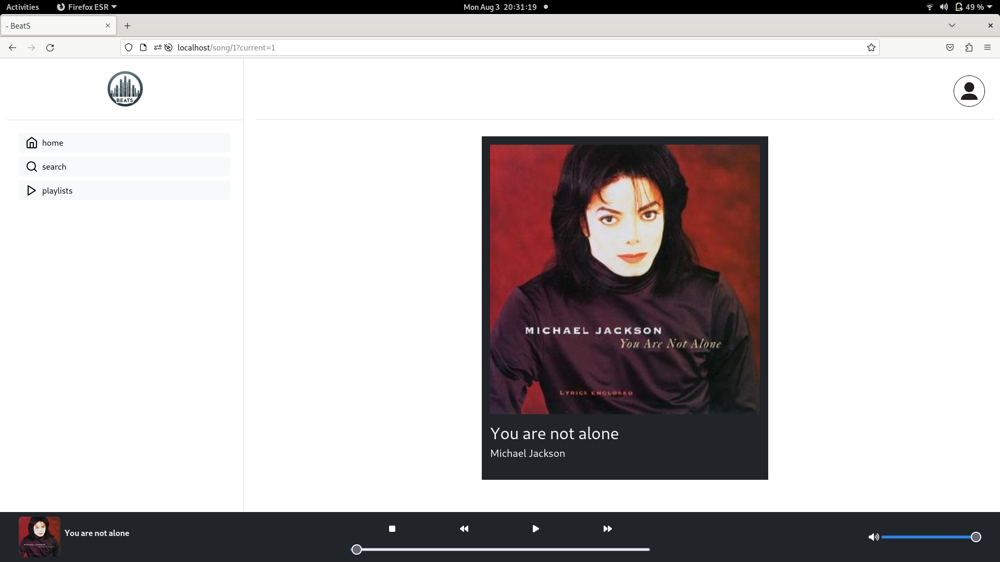
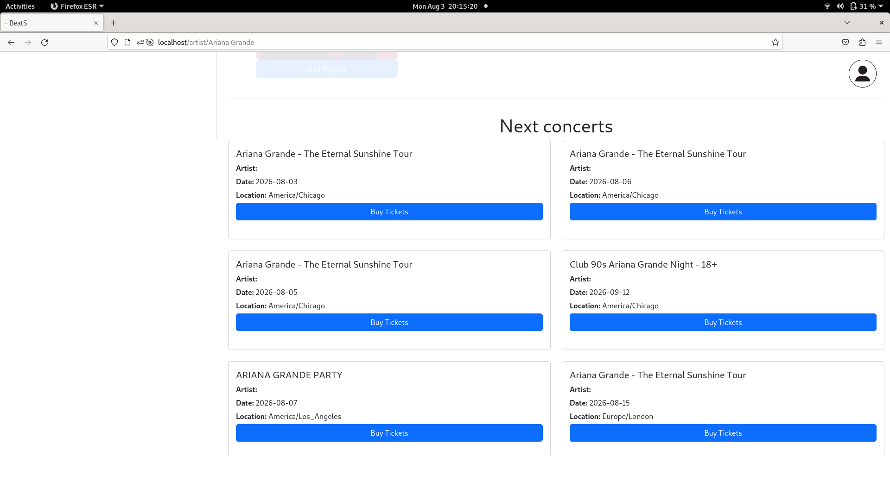

Junior Full-Stack Developer
Building web applications with Laravel, React, PHP, JavaScript and SQL.
Home
Hi, I’m Maria Danniella, a Junior Full-Stack Developer recently graduated in Web Application Development (DAW).
During my studies, I worked with technologies such as Laravel, Node.js, Vue.js, JavaScript, PHP, and SQL/NoSQL databases while developing different types of web applications.
Most of my experience comes from academic projects, where I worked on both frontend and backend tasks depending on the needs of each project. I enjoy understanding how the different parts of a web application work together.
Some of the projects I’ve worked on include a VR web experience built with React Three Fiber, a Netflix-style streaming platform, and a music application that integrates external APIs.
I’m always looking to learn new things and improve my skills. At the moment, I’m focusing on learning Python and expanding my knowledge of programming while continuing to build on the web development skills I gained during my studies.
Here you will find a collection of projects developed during my academic studies and group assignments. These projects represent my growth as a developer over time, starting from simple web interfaces to more complete full-stack applications. Throughout these experiences, I have worked with different frontend and backend technologies, applying what I learned to different types of web applications. Many of these projects were developed in collaborative environments, which helped me improve my communication, teamwork, and problem-solving skills. Click on any project below to explore its details and implementation.
I recently graduated in Web Application Development (DAW) from Institut Escola del Treball, where I developed a strong foundation in web development and programming. During my studies, I gained hands-on experience with technologies such as Laravel, Node.js, PHP, JavaScript, Vue.js, HTML, CSS, Java, PostgreSQL, MongoDB, and WordPress.
Most of my learning came from practical, team-based projects where I worked on both frontend and backend development depending on the needs of each project. These experiences helped me develop my technical skills while also improving my ability to collaborate, communicate, and organize work within a team.
One of my main projects was LaraView, a Netflix-style streaming platform built with Laravel. I worked on designing the database structure, creating wireframes, planning the project, and developing features such as user roles, authentication, and CRUD functionality for movies and TV series.
I also worked on Beats, a music application developed in a team using Laravel, React, and Inertia. The application allows users to search and explore music content and includes integration with the Ticketmaster API to display live concert information. I worked with technologies including Redux, MySQL, Bootstrap, Vite, GitLab, and Docker.
During my internship at Estudi Roig, I gained professional experience working with WordPress and Elementor. I helped update and maintain websites, improve layouts and responsiveness, and create custom features using HTML, CSS, and JavaScript. I also implemented user login and registration forms, improved the user experience of existing websites, and used Adobe Photoshop and GIMP for image editing and visual adjustments.
I enjoy learning by building projects and solving problems step by step. I don’t always get things right the first time, but I like understanding why something works or doesn’t work, because that’s where I learn the most.
I’m currently expanding my programming knowledge by learning Python and continuing to develop my technical skills. I am also planning to move to Belgium and am currently looking for opportunities there as a Junior Web Developer. My goal is to start my professional career in Belgium, contribute to real-world projects, continue learning, and grow within a professional team.
Contact
If you would like to get in touch, feel free to contact me by email or connect with me on LinkedIn and GitHub.
Project Overview: This project focuses on the redesign of the Sala Plataforma website, a nightclub in Barcelona. The original website had usability and visual design issues that negatively affected the user experience and made navigation confusing.
Problem: The previous version lacked a clear structure, had poor readability, and an outdated visual style. Important information was difficult to find, and the navigation was not intuitive for users.
Solution: A complete redesign was developed to improve usability, accessibility, and visual hierarchy. The new design introduces a cleaner interface, better content organization, and improved navigation.
Features implemented: responsive layout, improved UI design, event listings, user registration and login, contact form, and an enhanced user experience.
Technologies used: WordPress, Google Analytics, GitLab, and several WordPress plugins, including Ninja Forms, Otter Blocks, Ultimate Member, and WPCode Lite.
Project Overview: LaraView is a Netflix-inspired streaming platform developed as a team project during my Web Application Development studies. Users can browse movies and TV series, save their favourite titles, and access an individual page for each movie or TV series. Although the application was designed as a streaming platform, official trailers were used instead of full-length content for legal and storage reasons.
Problem: The goal was to develop a complete full-stack web application that simulated a real streaming platform, including user authentication, role management, multimedia administration, and a responsive user interface while collaborating as a team using Git.
Solution: We built the application using Laravel, implementing two user roles. Administrators can create, edit, and delete movies and TV series, while regular users can browse the catalogue, manage their favourites, save titles to their favourites list, and access the multimedia pages.
My role: As part of a collaborative team, I designed the database structure and created the database migrations. I also designed the initial wireframes, contributed to the user interface, and developed the multimedia pages with the integrated video player.
Project Overview: Beats is a music player web application developed as a collaborative project during my Web Application Development studies. Users can create an account, log in, explore songs, artists, and albums, and discover upcoming live concerts through the Ticketmaster API.
Problem: The objective was to develop a modern full-stack music platform by combining Laravel and React, while integrating an external API to provide users with additional real-world content and improve their overall experience.
Solution: We built the application using Laravel, React, and Inertia, creating a responsive interface where users can search for music content and explore concerts through the Ticketmaster API.
My role: As part of a collaborative team, I contributed to both the frontend and backend development of the application, working with Laravel and React to implement different features and improve the user interface.
Features implemented:
User registration and authentication.
Browse songs, artists, and albums.
Advanced search functionality.
Integration with the Ticketmaster API to display live concerts.
Responsive user interface.
Collaborative development using Git.
Project Gallery

Users can play songs while viewing the album artwork and playback controls.

Upcoming concerts are displayed using the Ticketmaster API, providing real-time event information based on the selected artist.
Project Overview: This virtual reality application was developed to showcase the history of the old textile factory that was converted into the Escola del Treball in Barcelona. The experience uses QR codes located in the school's main room to allow users to explore different historical elements through an interactive virtual environment.
Problem: The project aimed to find an engaging and interactive way to present the history of the school and make its historical information more accessible to students and visitors.
Solution: We developed an immersive interactive experience where users can start the experience with a "Get Started" button and explore different historical elements represented by red spheres. Selecting a sphere displays a panel containing detailed historical information.
Features implemented:
QR code integration to access the virtual reality experience.
Interactive 3D environment.
Interactive historical points represented by 3D spheres.
Historical information panels.
Integrated video content.
Historical image gallery.
Current school timetable.
Interactive user experience focused on education and historical preservation.
Technologies used: React, React Three Fiber, Node.js, MongoDB and JavaScript.